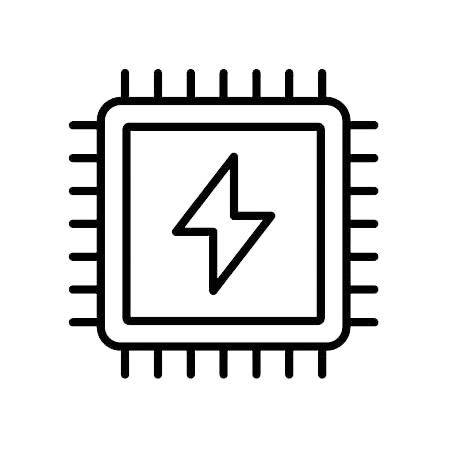
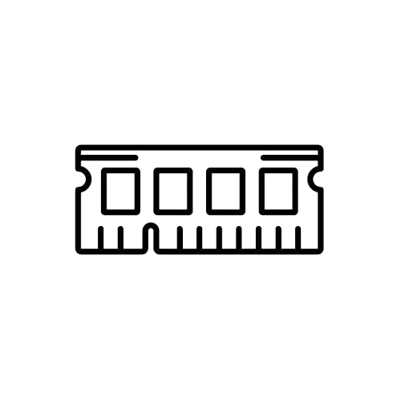

Dohub, Welcome
Add new options


CPU frequency 3.3-3.6 GHz.
Above numbers is average frequency of CPU, in some case it may varies by some reason.
This option is suitable for AI servers, trainning, inferencing, websites.
Choose your plan
There are options for users to shutdown their server.
Default option is "Never Shutdown" which means that the server
will never be shutdown until user stop and choose another options.
Default
Never Shutdown
Basic
1 Month
Password for Code Server *
This field is required for user to access Code Server, this password will be used in latter step.